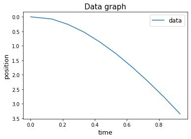

# 1-D free fall motion near the Earth's surface.
import numpy as np
import matplotlib.pyplot as plt
import math as m
#---------------------------------------------------------------------------------------------------------------------------
x0 = 0 #initial position
v0 = 0 #the initial velocity
h = 10 #height (meters)
dt = 0.05 #time step
t = 0 #initial time
g = 9.81 #m/s^2
#----------------------------------------Euler free fall w/o drag-------------------------------------------------------
def euler_no_drag(x0,v0,h,dt):
#x0 is initial position
#v0 is the initial velocity
#h is the height
#dt is the time step
v = [] #initialize an array for the velocity output
x = [] #initialize an array for the position output
xp = 0.0245 #n+1 value
t = 0 #initial time
time = [] #initialize an array for the time output
while xp < h: #run until object reaches the ground, watch out for infinite loops!
time.append(t)
v.append(v0)
x.append(x0)
vp = v0 + g*dt #velocity update
xp = x0 + v0*dt #position update
v0 = vp #update the velocity, v^n = v^n+1
x0 = xp #update the position, x^n = x^n+1
t = t+dt #update time
return x,v,time
#----------------------------------------Euler free fall WITH drag.---------------------------------------------------------
v_t = 6.36 #terminal velocity (m/s) (free parameter variable)
h = 10
x0 = 0
v0 = 0
t = 0
def euler_drag(x0,v0,t,h,dt,v_t): #euler free fall with drag.
#x0 is initial position
#v0 is the initial velocity
#t is the initial time
#h is the height
#dt is the time step
#v_t is the terminal velocity
v = [] #initialize an array for the velocity output
x = [] #initialize an array for the position output
xp = 0.0245 #n+1 value
t = 0 #initial time
time = [] #initialize an array for the time output
#add your code here
while xp < h: #run until object reaches the ground, watch out for infinite loops!
time.append(t)
v.append(v0)
x.append(x0)
vp = v0 + (g-g*(v0/v_t)*np.abs(v0/v_t))*dt #velocity update
xp = x0 + v0*dt #position update
v0 = vp #update the velocity, v^n = v^n+1
x0 = xp #update the position, x^n = x^n+1
t = t+dt #update time
return x,v,time
#---------------------------------------------End of functions--------------------------------------------------------------
[x,v,time] = euler_no_drag(x0,v0,h,dt) #recalling functions and defining to specific variables
[xd,vd,time_d] = euler_drag(x0,v0,t,h,dt,v_t) #recalling again (for function with drag)
#x = position
#v = velocity
#styrofoam ball-------------------------------------------------------------------------------------------------------------
ts = [0.0,0.132,0.232,0.332,0.432,0.532,0.632,0.732,0.832,0.932] #rewrote time data so start at time = 0
zs = [0.0,0.075, 0.260, 0.525, 0.870, 1.27, 1.73, 2.23, 2.77, 3.35]
#graphing-------------------------------------------------------------------------------------------------------------------
#Data graph
plt.plot(ts,zs,label = "data")
plt.legend(fontsize = 12)
plt.gca().invert_yaxis() #command for inverting y-axis
plt.title("Data graph",fontsize = 15)
plt.xlabel("time",fontsize = 13)
plt.ylabel("position",fontsize = 13)Text(0, 0.5, 'position')